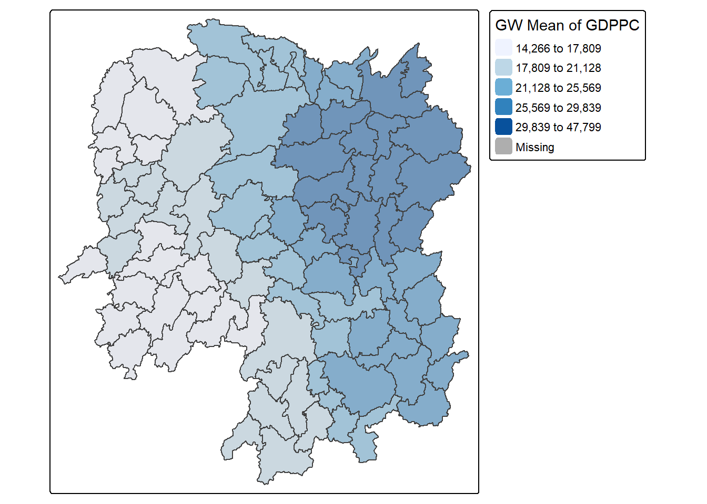

pacman::p_load(sf, spdep, tmap, tidyverse, knitr,GWmodel,ggstatsplot)In class Exercise 4
1 Load Packages
2 Data Wrangling
hunan <- st_read(dsn = "C:/govanzz/ISSS626_GEO_AUG_2025/In-class_Exercise/In-class_Ex04/Data/geospatial",
layer = "Hunan")Reading layer `Hunan' from data source
`C:\govanzz\ISSS626_GEO_AUG_2025\In-class_Exercise\In-class_Ex04\Data\geospatial'
using driver `ESRI Shapefile'
Simple feature collection with 88 features and 7 fields
Geometry type: POLYGON
Dimension: XY
Bounding box: xmin: 108.7831 ymin: 24.6342 xmax: 114.2544 ymax: 30.12812
Geodetic CRS: WGS 84hunan2012 <- read_csv("C:/govanzz/ISSS626_GEO_AUG_2025/In-class_Exercise/In-class_Ex04/Data/aspatial/Hunan_2012.csv")hunan <- left_join(hunan,hunan2012) %>%
select(1:3, 7, 15,16,31,32)3 Geographically weighted Summary Statistics
3.1 Cross Validation
bw_CV <- bw.gwr(GDPPC ~ 1,
data = hunan,
approach = "CV",
adaptive = FALSE,
kernel = "bisquare",
longlat = T)Fixed bandwidth: 357.483 CV score: 16265300180
Fixed bandwidth: 220.9808 CV score: 14954884470
Fixed bandwidth: 136.6178 CV score: 14132308004
Fixed bandwidth: 84.47865 CV score: 1.3689e+10
Fixed bandwidth: 52.25486 CV score: Inf
Fixed bandwidth: 104.3941 CV score: 13887653460
Fixed bandwidth: 72.17026 CV score: 13576697073
Fixed bandwidth: 64.56326 CV score: 14682099403
Fixed bandwidth: 76.87165 CV score: 13441171843
Fixed bandwidth: 79.77727 CV score: 13499046144
Fixed bandwidth: 75.07588 CV score: 13449888056
Fixed bandwidth: 77.9815 CV score: 13453994668
Fixed bandwidth: 76.18573 CV score: 13439681487
Fixed bandwidth: 75.7618 CV score: 13441598637
Fixed bandwidth: 76.44773 CV score: 13439635929
Fixed bandwidth: 76.60965 CV score: 1.344e+10
Fixed bandwidth: 76.34765 CV score: 13439554793
Fixed bandwidth: 76.2858 CV score: 13439564821
Fixed bandwidth: 76.38588 CV score: 13439571936
Fixed bandwidth: 76.32403 CV score: 13439553085
Fixed bandwidth: 76.30943 CV score: 13439555446
Fixed bandwidth: 76.33305 CV score: 13439552932
Fixed bandwidth: 76.33863 CV score: 13439553336
Fixed bandwidth: 76.3296 CV score: 13439552873
Fixed bandwidth: 76.32747 CV score: 13439552909
Fixed bandwidth: 76.33092 CV score: 13439552879
Fixed bandwidth: 76.32879 CV score: 13439552880
Fixed bandwidth: 76.33011 CV score: 13439552873
Fixed bandwidth: 76.33042 CV score: 13439552874
Fixed bandwidth: 76.32991 CV score: 13439552873
Fixed bandwidth: 76.32979 CV score: 13439552873
Fixed bandwidth: 76.32999 CV score: 13439552873
Fixed bandwidth: 76.32987 CV score: 13439552873
Fixed bandwidth: 76.32994 CV score: 13439552873 bw_CV[1] 76.32991bw_AIC <- bw.gwr(GDPPC ~ 1,
data = hunan,
approach = "AIC",
adaptive = FALSE,
kernel = "bisquare",
longlat = T)Fixed bandwidth: 357.483 AICc value: 1927.632
Fixed bandwidth: 220.9808 AICc value: 1921.546
Fixed bandwidth: 136.6178 AICc value: 1919.981
Fixed bandwidth: 84.47865 AICc value: 1940.58
Fixed bandwidth: 168.8416 AICc value: 1919.452
Fixed bandwidth: 188.757 AICc value: 1920.004
Fixed bandwidth: 156.5332 AICc value: 1919.403
Fixed bandwidth: 148.9262 AICc value: 1919.518
Fixed bandwidth: 161.2346 AICc value: 1919.385
Fixed bandwidth: 164.1403 AICc value: 1919.397
Fixed bandwidth: 159.4389 AICc value: 1919.387
Fixed bandwidth: 162.3445 AICc value: 1919.388
Fixed bandwidth: 160.5487 AICc value: 1919.385
Fixed bandwidth: 160.1248 AICc value: 1919.386
Fixed bandwidth: 160.8107 AICc value: 1919.385 bw_AIC[1] 160.8107# Convert sf to Spatial
hunan_sp <- as(hunan, "Spatial")
# Then run gwss on hunan_sp
gwstat <- gwss(data = hunan_sp,
vars = "GDPPC",
bw = bw_AIC,
kernel = "bisquare",
adaptive = FALSE,
longlat = T)# Convert gwss SDF output into a data frame
gwstat_df <- as.data.frame(gwstat$SDF)# Append the newly derived data.frame onto hunan_sf
hunan_gstat <- cbind(hunan, gwstat_df)3.2 Plotting and Visualisation
# Plot geographically weighted mean
tm_shape(hunan_gstat) +
tm_fill("GDPPC_LM",
style = "quantile",
palette = "Blues",
title = "GW Mean of GDPPC") +
tm_borders(alpha = 0.5)